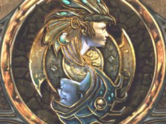

腳酸死了!!
有夠酸，比CW拍照還慘!!玩個電動搞得比當初上成功嶺還慘，真是佩服自己。@_@ 
博德之門二終於又進一章，玩到第四章。玩這個RPG 真的是蠻能體驗人心險惡的， 不但對世界有鼓茫然，各方勢力與你洽談時都會告訴你與他們同盟才是對的。 從一個個的小任務中終於好像慢慢勾劃出世界的樣子，同時也發現主角自己的本質。
好久沒玩純正ADnD的RPG 了，上次玩是高一高二時吧，光茫之池!!夠古老。@_@
在第三章中，主角參與了兩大盜賊公會的爭戰。當主角投身於其中一公會時， 發現另一個公會的成員和頭頭都是吸血鬼。打吸血鬼們時終於Turning Undead 有作用了....真是讓人感動....Q_Q
不過還是有夠受不了Drain Level....還會累計....O_O
在ADnD的世界�堙A不是血多攻擊力大就是無敵的。 各種怪法術怪狀況讓人防不勝防，不是被人給CHARM去，就是迷惑、呆然、停止、 緩慢等法術，任一個都讓人痛苦不堪。即死術還好多了， 一中了就有快樂的怨魂升天去（博德之門內畫的真好）， 也不用再凹了，LOAD吧....@_@
晚上在SUN MOVIE看到THE MUSE，又譯第六感女神，頗有趣的。